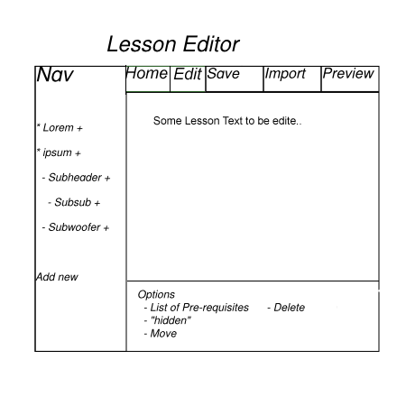

2.3.1.5 Importing data into a Lesson
The instructor has the option to import data files and lessons into the currently edited lesson. The instructor will click the "Import" button to activate this feature.

FIXME
While editing, it is possible to bring in data from an outside source. To tdo this click inside the page where you would want to import data to. Click the "Import" button. Find the file and click "OK". The data will then be inserted into the lesson or class.
Prev: creating classes
| Next: editing lessons
| Up: lesson manager
| Top: index